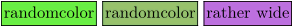

Syntax (autogenerated)
| \startuseMPgraphic{...}{...,...} ... \stopuseMPgraphic | |
| {...} | name |
| {...,...} | key |
Syntax
| \startuseMPgraphic{...} | |
| %% MetaPost code | |
| \stopuseMPgraphic | |
| {...} | name under which the graphic will be known |
Description
Define code for a MetaPost graphic. The graphic can be placed in the document with \useMPgraphic, and will be recompiled every time it is placed.
If a custom MetaPost instance (defined with \defineMPinstance) should be used, the name of the graphic has to be preceded by the name of the MetaPost instance, with a double colon in between: \startuseMPgraphic{instancename::graphicname}.
Example
\def\mycolor{.625red} \defineMPinstance [myinstance] [metafun] \startuseMPgraphic{myinstance::name} fill fullcircle scaled 20pt withcolor \mycolor; \stopuseMPgraphic \startuseMPgraphic{name} fill fullcircle scaled 20pt withcolor \mycolor; \stopuseMPgraphic red: \useMPgraphic{name} red: \useMPgraphic{myinstance::name} \def\mycolor{.625blue} blue: \useMPgraphic{name}
The command is very nice for defining Overlays that vary randomly:
-
\startuseMPgraphic{randomcolor} fill unitsquare xyscaled (\overlaywidth, \overlayheight) % `uniformdeviate 1` produces a random number between 0 and 1 withcolor (uniformdeviate 1, uniformdeviate 1, uniformdeviate 1); \stopuseMPgraphic \defineoverlay [beta] [\useMPgraphic{randomcolor}] \dontleavehmode \framed[background=beta]{randomcolor} \framed[background=beta]{randomcolor} \framed[background=beta]{rather wide}
- 
See also
- \defineMPinstance
- \setupMPinstance
- \startMPinclusions
- \startMPenvironment — deprecated
- \startMPcode
- \startuseMPgraphic — dynamic graphics that are recompiled at every use
- \useMPgraphic — use a dynamic graphic
- \startuniqueMPgraphic — dynamic graphics that are recompiled when parameters (width, height, depth, background color, line color) change
- \uniqueMPgraphic — use a dynamic graphic
- \startreusableMPgraphic — static graphics that are compiled once
- \reuseMPgraphic — use a static graphic
- \startstaticMPfigure — standalone graphics
- \usestaticMPfigure — use a standalone graphic
- \startMPpage — a page just large enough to fit its MetaPost contents
Help from ConTeXt-Mailinglist/Forum
All issues with: